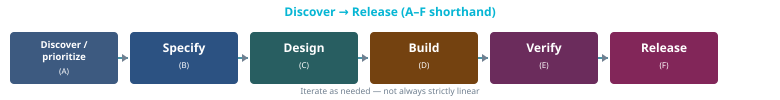

Phases A–F

Phase A — Discover / prioritize
Activities: Ideas, rough sizing, ordering.
| Artifact | Action |
|---|---|
| Planning source of truth | One place for prioritized work (WBS/CSV, backlog, board, or optional high-level docs/ROADMAP.md). Record where it lives in docs/PROJECT.md or root README.md. |
| Work breakdown (WBS) | e.g. docs/requirements/WBS.csv — new epics/stories or statuses such as draft / backlog. |
| Spec files under milestone tree | Optional until you commit to build. |
Exit: A backlog item is ready to specify when it has a clear outcome and a home in the WBS (or equivalent).
Phase B — Specify
Activities: Acceptance criteria, edge cases, dependencies, risks.
| Artifact | Action |
|---|---|
| Story (or feature) spec | status: ready when acceptance criteria are agreed. |
| Risk register | e.g. docs/requirements/risks/register.csv — update when scope changes risk. |
| Themes / tags matrix | e.g. docs/requirements/traceability/themes-matrix.csv if you use themes. |
Exit: Story is ready; implementation tasks can be split.
Phase C — Design (lightweight)
Activities: Enough design to implement without rework; record durable decisions only when useful.
| Artifact | When |
|---|---|
| Epic/story body | Sketches, interfaces, UX notes in the same spec. |
| ADRs | e.g. docs/adr/ — when a choice is hard to reverse or affects multiple modules. |
| Architecture notes | e.g. docs/architecture/ when subsystems or data flow need a shared picture. |
Exit: No blocking unknown for this scope remains undocumented.
Phase D — Build
Activities: Implementation, tests, local verification.
| Artifact | Action |
|---|---|
| Task-level notes | Link requirement or task IDs in commits or PR descriptions when useful. |
| WBS / backlog | Set items to in_progress when work starts. |
| API / public surface | Language-appropriate doc comments (KDoc, Javadoc, Rustdoc, docstrings, …). |
| CI pipeline config | e.g. .github/workflows/ — document what runs and merge/release gates in docs/development/ (see CI/CD & quality gates). |
| Test plan (lightweight) | For non-trivial scope: levels, exit criteria — story spec, docs/testing/, or templates/TEST-PLAN.template.md. |
Exit: Acceptance criteria met; tests added or skip justified in the story/PR.
Phase E — Verify
Activities: Automated tests, manual checks, regression of related behavior.
| Artifact | Action |
|---|---|
| Tests ↔ requirements | e.g. docs/requirements/traceability/tests-matrix.csv, or inline references in tests. |
| Quality gates (CI) | Pipeline passes agreed checks (build, lint, tests, …) before merge/release — documented in docs/development/. |
| Story spec | status: done when verified. |
Exit: Story done; backlog row matches reality; CI reflects the same bar as local verification unless a temporary exception is recorded.
Phase F — Release
Activities: Versioning, packaging, distribution, compliance checks.
| Artifact | Action |
|---|---|
docs/release/ (or equivalent) | Checklists, privacy/compliance links, signing notes (no secrets in repo). |
Root README.md | User-visible features if changed. |
| Planning / milestone status | Updated to reflect what shipped (wherever you track it). |
| Release CI (optional) | Tag/build pipelines, store upload — secrets in CI vault; document process in docs/release/ or docs/development/. |
Exit: Artifact published to the intended distribution channel (app store, registry, fleet, …); status docs updated.